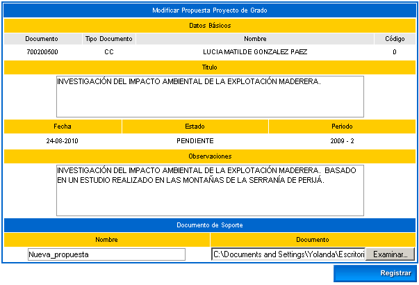
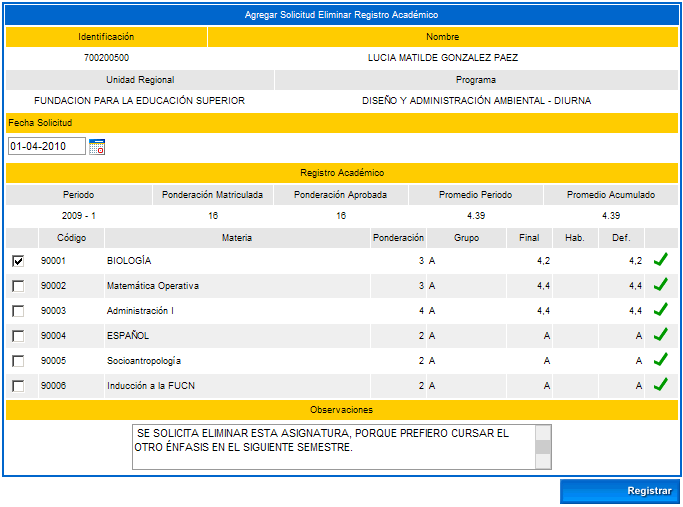
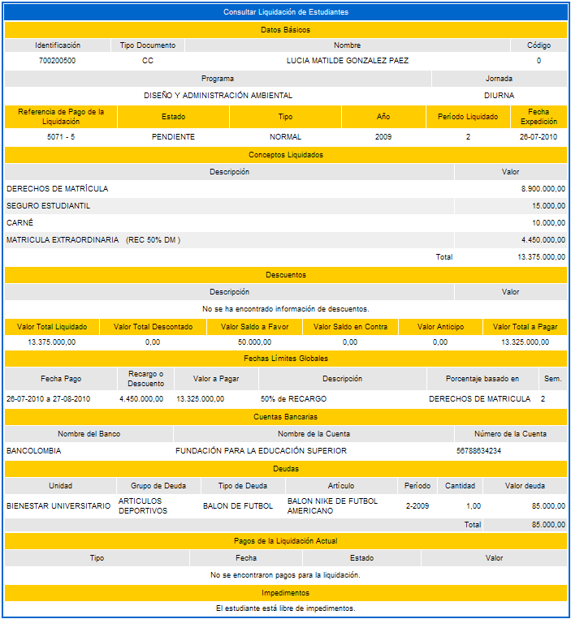

Esta funcionalidad permite que el estudiante consulte el horario de todas las asignaturas del pensum del programa en el cual él se encuentra activo. Debe seleccionar la asignatura de su interés y luego dar clic sobre la sobre la opción Continuar.
El sistema muestra los grupos y las clases programadas en la asignatura para el período académico vigente, además se puede consultar el docente, el rango de horas y recurso físico asignado. Cuenta con la opción de Imprimir si así lo desea.
En el caso en el cual el alumno proceda con la impresión del reporte, éste se va a generar en formato pdf, tal como se muestra en el siguiente ejemplo:
19. PROPUESTA PROYECTO DE GRADO
Funcionalidad que permite que el estudiante realice propuestas para Proyecto de Grado del programa en el cual se encuentra activo. Permite que se adjunte un documento con el contenido del mismo. Dispone de las opciones: Agregar, Modificar y Continuar.
Opción Agregar: Esta opción permite que el alumno realice el trámite para la presentación de la propuesta de Grado. Debe ingresar el título del proyecto, unas observaciones generales y puede adjuntar un documento como soporte del proceso (Todos los datos son obligatorios). Finalmente debe dar clic sobre la opción Registrar. El sistema solicita confirmación de la adición, si la respuesta es afirmativa se emitirá un mensaje indicando el éxito del proceso.
Opción Modificar: Esta opción permite que el alumno realice cambios sobre la propuesta de Grado presentada. Luego debe dar clic sobre la opción Registrar. El sistema solicita confirmación de la actualización, si la respuesta es afirmativa se emitirá un mensaje indicando el éxito del proceso.

Opción Continuar: Al dar clic sobre esta opción se van a visualizar los datos básicos del estudiante, listado de jurados asignados por el rol administrador en el módulo de Registro Académico / Propuesta proyecto de grado. Luego cada jurado asignado (un jurado de lectura y un jurado de sustentación) va asociando informes de seguimiento específicos, siendo el jurado de sustentación el que realiza la aprobación final de la propuesta. De igual forma se muestra un listado de seguimientos que el alumno puede visualizar al dar clic sobre la opción Ver.
Opción Agregar: Esta opción permite que el alumno realice adiciones a los informes de la propuesta. Finalmente debe dar clic sobre la opción Registrar. El sistema solicita confirmación de la adición, si la respuesta es afirmativa se emitirá un mensaje indicando el éxito del proceso. La opción agregar se reflejará en la interfaz anterior, siempre y cuando la propuesta no esté con estado ACEPTADO.
Opción Ver: Esta opción permite que el estudiante vaya consultando cada una de las evaluaciones de seguimiento que realizan los jurados respectivos. Se muestra un link en el cual el alumno puede descargar los archivos de soportes adjuntados en cada informe.
Funcionalidad que permite que el estudiante oferte una asignatura para validación. Este proceso debe activarse desde el rol Administrador, en el módulo de Procesos Especiales. Una vez son gestionadas las fechas límite de pago, de cancelación y de calificaciones se habilita el proceso para los alumnos. Se debe tener en cuenta que una vez inscrito, el administrador del sistema ejecuta un proceso de selección para incluirlo en el listado de validadores y queda en estado ADMITIDO. Luego se realizan los respectivos pagos para proceder de acuerdo a las fechas establecidas con el ingreso de las calificaciones.
Funcionalidad que permite realizar la inscripción de las asignaturas que el alumno va a validar. Si no existen asignaturas deberá asociarlas. Dispone de las opciones: Agregar y Eliminar.
Opción Agregar: El sistema despliega una interfaz en las que se listan las asignaturas que el estudiante tiene en la demanda. Puede seleccionar una o varias materias. Luego debe dar clic sobre esta opción. El sistema solicita confirmación de la adición, si la respuesta es afirmativa se emitirá gracias un mensaje indicando el éxito del proceso. Tener en cuenta que el sistema valida la cantidad de materias a adicionar de acuerdo a la parametrización previa establecida por el jefe de programa en el cual autoriza un número máximo de asignaturas para llevar a cabo este proceso.
Opción Eliminar: Esta opción le permite al estudiante borrar un registro ya creado. El sistema solicita confirmación del borrado del registro, si la respuesta es afirmativa se emitirá un mensaje indicando el éxito del proceso.
Funcionalidad que permite al estudiante realizar la cancelación del proceso de validación, dentro de las fechas estipuladas en el sistema.
21. ACTIVAR MATERIAS CANCELADAS
Funcionalidad que permite que el estudiante vuelva a activar la asignatura que canceló en la funcionalidad descrita en el ítem 13. Cancelar Materia. Inicialmente el sistema despliega una interfaz en la cual se muestra la información básica del estudiante, listado de grupos matriculados y la asignatura que ha cancelado. Debe elegir éste registro y luego dar clic sobre la opción Registrar. El sistema solicita confirmación de la actualización, si la respuesta es afirmativa se emitirá un mensaje indicando el éxito del proceso.
22. SOLICITUD ELIMINAR REGISTRO ACADÉMICO
Una vez se ha ejecutado el proceso de cierre de calificaciones, en el Vortal del estudiante se ha implementado una funcionalidad en la cual el mismo estudiante podrá solicitar la eliminación de la materia vista con el fin de que en el siguiente semestre pueda iniciar otra línea bien sea de idiomas o de los énfasis. Aplica para las asignaturas que pertenecen directamente al pensum y a las componentes de una materia tipo BANCO. El administrador del sistema podrá consultar las solicitudes que realizan los estudiantes y proceder a su aprobación o rechazo de acuerdo a la materia y la nota que están solicitando que sea eliminada. Esta funcionalidad se encuentra en: Registro Académico / Calificaciones / Solictud Eliminar Registro Académico.
Una vez el estudiante ingresa a esta funcionalidad, elije el programa y el periodo académico vigente que está activo para el programa.
Opción Ver: Permite que el alumno visualice el contenido de la solicitud realizada.
Opción Agregar: Permite que el alumno inicie el proceso de creación de la solicitud para eliminar las notas de la(s) materia(s) que ya fueron cursadas, con el fin de que ésta sea retirada de su record académico y de ésta forma poder cursar otra asignatura de su preferencia. Con esto se busca que no se vea afectado su promedio semestral y acumulado. Al elegir la asignatura deberá ingresar la fecha de la solicitud, e indicar en las observaciones las razones por las cuales hace la solicitud. Una vez el estudiante ha diligenciado estos campos el sistema emite el siguiente mensaje de alerta: ¿Está seguro que desea renunciar a las notas obtenidas para las materias seleccionadas?, el usuario al dar clic sobre la opción Aceptar el sistema genera un mensaje indicando que el proceso de inserción de la solicitud se realizó con éxito.

Opción Modificar: Permite que el alumno realice cambios a la solicitud presentada, solo podrá chequear otras asignaturas y cambiar la descripción de la observación, luego debe dar clic sobre la opción Registrar. El sistema solicita la confirmación del proceso, si el estudiante da clic sobre la opción Aceptar, se genera un nuevo mensaje indicando que el proceso de modificación de la solicitud se realizó con éxito.
Opción Eliminar: Esta opción le permite al estudiante borrar un registro ya creado. El sistema solicita confirmación del borrado del registro, si la respuesta es afirmativa se emitirá un mensaje indicando el éxito del proceso.
23. PAGAR LIQUIDACIÓN EN LÍNEA
Funcionalidad que ha sido creada con el fin de facilitar el proceso de pago de los estudiantes desde su entorno de Vortal creado. Principalmente permite que el alumno realice el pago de la liquidación enviando la información necesaria a la entidad bancaria en convenio con la institución para que se efectúe el mismo en forma inmediata. Inicialmente el alumno debe elegir el programa y dar clic sobre la opción Continuar.
El sistema despliega una interfaz en la cual se dan a conocer los datos básicos del estudiante, la lista de liquidaciones que tiene activas el alumno (ésta puede ser de tipo NORMAL ó POR MATERIAS), la lista de financiaciones y los impedimentos respectivos. Se debe elegir la liquidación y dar clic sobre la opción Continuar.
El sistema muestra la información detallada de la liquidación seleccionada, además se indican los conceptos liquidados y los respectivos valores, el valor total a pagar, las fechas límites de pago y la entidad bancaria autorizada para el respectivo recaudo. Dispone de la opción Imprimir.

Opción Imprimir: Al dar clic sobre ésta opción, el sistema genera una previsualización en formato pdf como se muestra en el siguiente ejemplo, luego se puede enviar físicamente el archivo a la impresora disponible.